Benchmarking 3D Geometric Reasoning
of Vision Foundation Models
with Simulated and Real Polyhedra
GIQ:
A benchmark for evaluating 3D geometric reasoning of foundation models using synthetic and real polyhedra.
Evaluation:
We evaluate state-of-the-art models, revealing significant limitations in monocular 3D reconstruction, symmetry detection, mental rotation, and zero-shot shape classification.
Analysis: Our analysis shows that models struggle with detailed geometric differentiation, systematically misidentifying fundamental properties such as symmetry, convexity, and compound structures.
Impact: GIQ highlights critical gaps in geometric intelligence, facilitating targeted improvements in robust, geometry-aware representation learning.
Foundation 3D reconstruction and 2D vision models show impressive benchmark results, but their geometric understanding remains unclear. We introduce GIQ, a benchmark for evaluating the 3D geometric reasoning of vision and vision-language models. GIQ contains synthetic and real-world images with 3D meshes of diverse polyhedra, covering various complexities and symmetries. Our experiments reveal significant shortcomings: state-of-the-art models struggle with basic shape reconstruction, symmetry detection, mental rotation, and zero-shot shape classification, frequently misinterpreting properties like convexity and compound structures. GIQ highlights these critical gaps, facilitating targeted improvements in geometry-aware learning.
3D Meshes:
Our dataset systematically explores geometric complexity, symmetry, and topological regularity through a carefully curated collection of 224 polyhedra, ranging from simple, highly symmetric forms to intricate, nonconvex, and irregular shapes. Specific counts are summarized in Table 1.
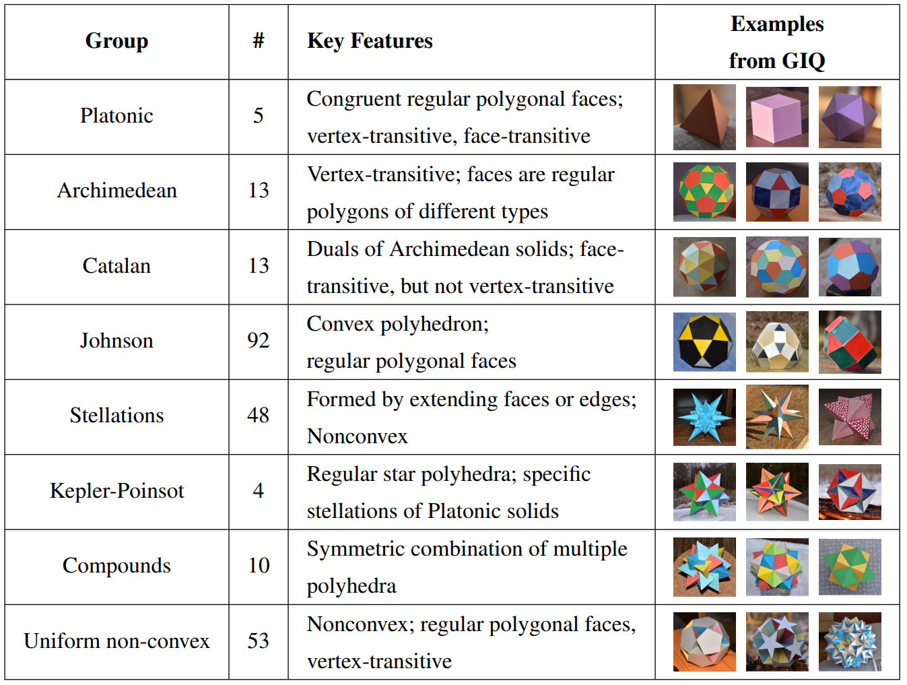
Table 1: Summary of polyhedral groups in the GIQ dataset, highlighting key geometric characteristics
and representative examples. Platonic, Archimedean, and Catalan solids are convex, while Kepler-
Poinsot polyhedra and compounds represent special cases of stellations. The categorization presented
here is arbitrary: polyhedra possess numerous properties allowing various groupings; we selected this
set as a representative example.
Synthetic Renderings:
To systematically evaluate spatial reasoning, we render each of the 224 polyhedra from 20 viewpoints uniformly distributed over the viewing hemisphere. We use the Mitsuba renderer with a 256×256 perspective camera, employing diffuse shading and a two-sided, high-reflectance yellowish BRDF for realistic lighting. Representative renderings are shown in Figure 1.
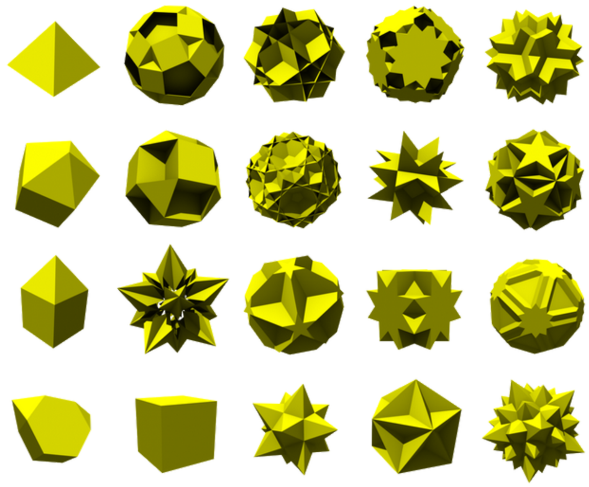
Figure 1: Simulated solids from Mitsuba Physically Based Renderer.
Real-World Images:
We complement our synthetic dataset with physically constructed models (meticulously assembled by Piotr Pawlikowski) for a representative subset of polyhedra, photographed under diverse indoor (3,371 images) and outdoor (3,601 images) conditions. This approach introduces natural variability in lighting, backgrounds, and viewpoints, enabling comprehensive evaluation across controlled and real-world scenarios. Representative images are shown in Figure 2. Interactive examples of image-model pairs from our dataset are presented in Figure 3.
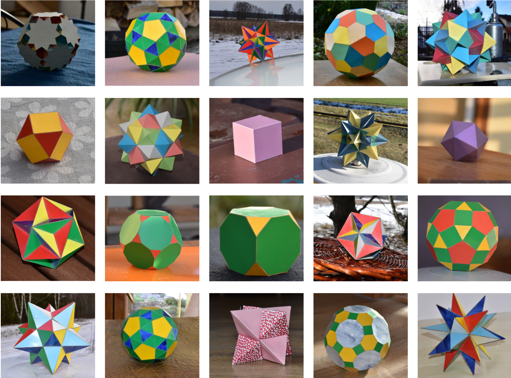
Figure 2: Real polyhedra constructed from paper, placed in different realistic backgrounds.
Figure 3: Example images paired with their interactive 3D models. Click “Go 3D” to explore each model.
Monocular 3D Reconstruction
Experimental Setup:
The experimental task involves reconstructing the complete 3D geometry of polyhedral shapes from a single image. We selected representative examples across three distinct categories—cube (Platonic solid), great dodecahedron (Kepler-Poinsot solid), and small cubicuboctahedron (uniform nonconvex solid)—evaluating each on both synthetic renderings and real-world (wild) photographs. To provide a fair comparison and align with training conditions, wild images were preprocessed via center cropping and background removal.
Reconstruction Methods:
We benchmarked three monocular 3D reconstruction methods on our polyhedral dataset:
Stable Fast 3D utilizes a transformer-based architecture, encoding images with DINOv2 and outputting triplane-based shape representations. It was trained on a curated subset of Objaverse, incorporating diverse geometries and appearances;
Shap-E, a diffusion-based generative model trained on several million diverse 3D assets collected from the internet. Shap-E employs a Transformer-based encoder to generate parameters for implicit neural representations, followed by a diffusion model trained on these encoded outputs, enabling direct rendering into textured 3D meshes;
OpenLRM, based on the Large Reconstruction Model (LRM), uses a transformer-based architecture to directly predict a neural radiance field from single images, trained end-to-end with image reconstruction losses. OpenLRM was trained on Objaverse, a collection of approximately 800K diverse 3D assets, and MVImgNet, consisting of around 6.5 million frames from 219,188 videos across 238 object classes.
Main Results:
Results from this evaluation are presented in Figure 4. Despite extensive training on millions of diverse shapes (Shap-E) or inclusion of similar solids in the training dataset (OpenLRM), all three models exhibited significant reconstruction failures for most tested cases, particularly on wild images and shapes beyond the simplest forms. Shap-E successfully reconstructed the synthetic cube but failed dramatically on the wild cube and more complex shapes. Stable Fast 3D accurately captured front-facing geometries for several shapes but consistently failed to coherently reconstruct side and rear views. Similarly, OpenLRM produced plausible reconstructions for simple synthetic shapes but exhibited considerable inaccuracies across viewpoints and struggled substantially with complex and wild imagery. These results underscore critical limitations of current monocular reconstruction approaches in capturing fundamental geometric properties from single images, even when trained on extensive, diverse datasets containing similar geometric primitives.
(Drag the slider to rotate the shapes)
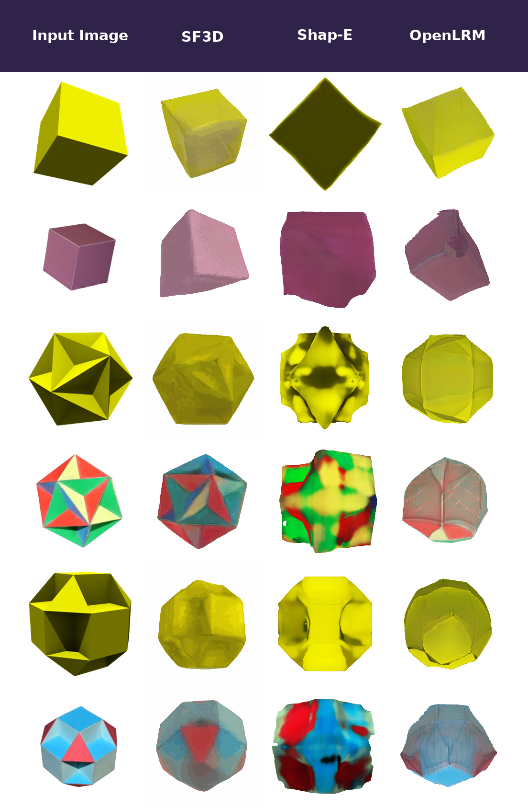
Figure 4: Monocular 3D reconstruction results. Each method outputs the selected renderings per input view. Rows depict pairs of synthetic and wild images of a cube (platonic solid), great dodecahedron (Kepler-Poinsot solid), and small cubicuboctahedron (uniform nonconvex solid).
Finding 1: Advanced monocular 3D reconstruction methods trained on several million 3D assets struggle to accurately reconstruct even simple geometric shapes.
3D Symmetry Detection
Experimental Setup:
We evaluated the capability of various featurizers to detect specific 3D symmetry elements from single-image inputs. The task involved predicting the presence of three distinct symmetry elements in objects depicted by images (illustrated in Figure 5): central point reflection (invariance under inversion through a central point), 4-fold rotational symmetry (invariance under rotation by 90 degrees), and 5-fold rotational symmetry (invariance under rotation by 72 degrees). Unlike common evaluations focused on 2D planar symmetries or image rotations, our evaluation explicitly targets recognition of inherent symmetry elements defined with respect to the object's three-dimensional structure.
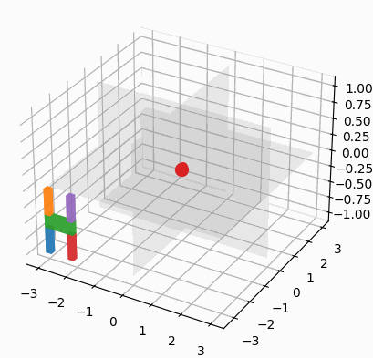
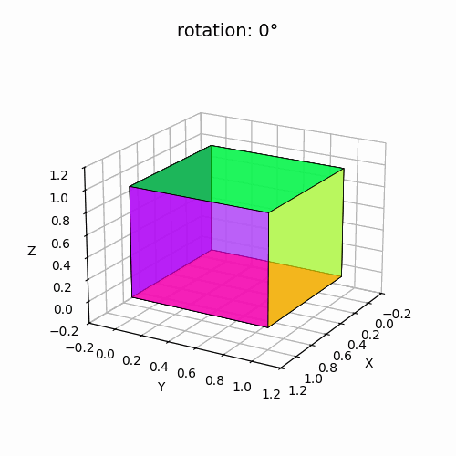
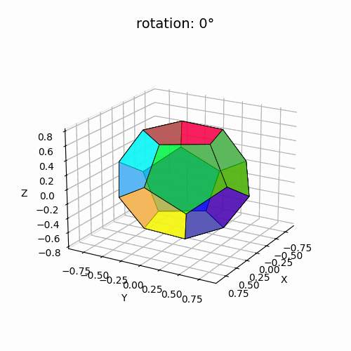
Figure 5: Three 3D symmetry elements (left to right) – central point reflection, 4-fold rotational symmetry, 5-fold rotational symmetry.
Featurizer Selection:
To probe the inherent 3D understanding of widely-used featurizers, we examined a diverse set of models covering different modalities, architectures, and supervision strategies. Specifically, we selected six supervised methods, three of which are image-and-text transformer-based models (CLIP, DreamSim, SigLip), and three image-based ones (DeiT III, SAM, and ConvNext), with ConvNext utilizing a convolutional-based architecture. Additionally, we considered three self-supervised transformer-based methods trained solely on images: DINO, DINOv2, and Masked AutoEncoder (MAE).
Main Results::
Results of our evaluation are presented in Table 2. Notably, DINOv2 consistently delivered superior performance across symmetry categories, particularly excelling in the recognition of 4-fold rotational symmetry, achieving up to 93% accuracy on wild images despite being trained only on synthetic data. This result highlights that DINOv2’s image embeddings inherently capture fundamental 3D structural properties without explicit 3D supervision, demonstrating the potential of foundation models to implicitly encode 3D structure.
These findings open the door to utilizing symmetry detection as a lightweight, plug-and-play module in downstream tasks by leveraging pretrained vision encoders like DINOv2.
Featurizer
Central point reflection
5-fold rotation
4-fold rotation
Syn
Wild
Syn
Wild
Syn
Wild
DINOv2
0.85
0.73
0.97
0.85
0.96
0.93
CLIP
0.82
0.74
0.80
0.78
0.74
0.69
ConvNeXt
0.76
0.62
0.93
0.85
0.90
0.76
SigLip
0.69
0.59
0.86
0.79
0.78
0.74
MAE
0.70
0.66
0.82
0.71
0.74
0.71
DeiT III
0.75
0.65
0.82
0.72
0.70
0.65
DreamSim
0.77
0.71
0.78
0.71
0.68
0.63
SAM
0.74
0.73
0.79
0.68
0.68
0.59
DINO
0.66
0.62
0.88
0.71
0.87
0.61
Table 2: Balanced accuracy (0.5·TP/P + 0.5·TN/N) for linear probing of 3D symmetry detection using embeddings from different featurizers. The classifier is trained on synthetic images (Syn) and evaluated on both synthetic and real-world (Wild) inputs. Bold indicates best accuracy; underline indicates second best.
Finding 2: DINOv2 reliably detects proper rotational symmetries, opening the door to using pretrained vision encoders as lightweight symmetry detection modules for downstream tasks.
Mental Rotation Test
Experimental Setup:
We evaluate foundation models' spatial reasoning capabilities through a Mental Rotation Test (MRT). This task involves determining whether two images—one synthetic rendering and one real-world (wild) photograph—depict the same polyhedral object, differing only by rotation. Such a scenario is relevant to real-world applications, for instance, a robot trained on CAD models needing to locate a physical object with matching geometric properties in an unstructured environment. Thus, this setup provides valuable insights from both analytical and practical perspectives.
Test Set Selection:
We employ a challenging hard split—composed of visually and geometrically similar polyhedral pairs—to rigorously test fine-grained shape differentiation. Examples of these challenging shape pairs are shown in Table 3.
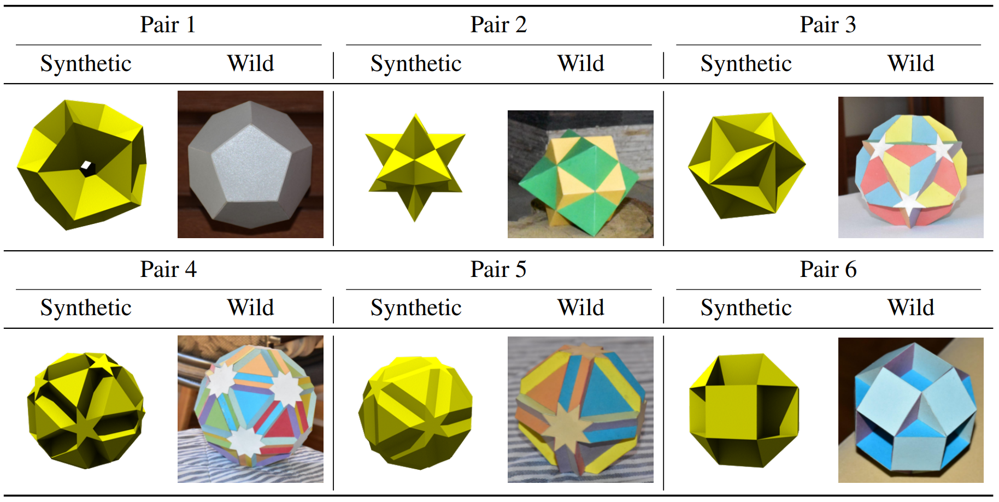
Table 3: Samples of visually and geometrically similar synthetic-wild shape pairs used in the hard
test set. Pairs were manually selected based on structural and visual similarities, such as shared
symmetries, vertex configurations, and derivation from common polyhedra (e.g., pair 6: Small
Cubicuboctahedron and Small Rhombihexahedron, both derived from the Rhombicuboctahedron).
Main Results::
Results are summarized in Figure 6. We investigated two experimental scenarios: (a) training and testing exclusively on synthetic images, and (b) training and testing entirely on mixed pairs (synthetic-wild). All models exhibited a significant performance drop compared to the trivial split, particularly in the synthetic-wild test scenario, where average performance approached chance level. While ConvNext achieved the highest accuracy of 60\% in the mixed pairs scenario, this remains close to random guessing, highlighting the considerable difficulty models face in reliably distinguishing subtle geometric differences readily apparent to humans.
Overall, these experiments reveal substantial limitations in current foundation models' embeddings to accurately differentiate geometrically similar shapes, especially when generalizing from synthetic to real-world imagery. This highlights the need for targeted improvements in vision featurizers to robustly capture nuanced geometric distinctions.
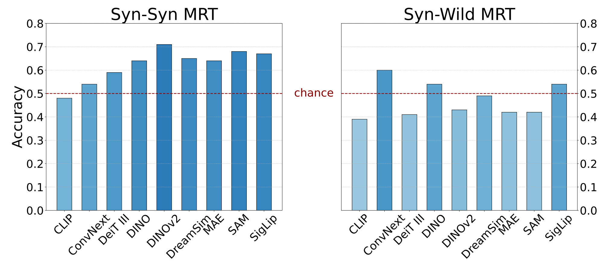
Figure 6: Mental Rotation Test accuracy for classification of ``negative'' (visually similar but different) shape pairs. Left: models trained and tested on synthetic pairs (Syn-Syn). Right: models trained and tested on synthetic-wild pairs (Syn-Wild), showing accuracy near chance (dark red dashed line).
Finding 3: Foundation vision and vision-language models fail to reliably differentiate geometrically similar shapes—highlighting a core limitation in their spatial reasoning abilities.
Zero-Shot Shape Classification
Experimental Setup:
We conducted a zero-shot polyhedron classification task to evaluate the geometric reasoning capabilities of frontier vision-language models. Specifically, we assessed Claude 3.7 Sonnet, Gemini 2.5 Pro, ChatGPT o3, and ChatGPT o4-mini-high by prompting each model with synthetic and real-world images from our dataset, asking simply: What is the name of this polyhedron?
Quantitative Results:
Classification accuracy across polyhedron categories is reported in Figure 7.
Model performance varied significantly across polyhedron categories. Gemini 2.5 Pro achieved perfect accuracy for Kepler-Poinsot solids, while ChatGPT o3 demonstrated perfect score on Platonic solids. Conversely, all models struggled with Johnson solids, Catalan solids, uniform non-convex solids, and compound structures, highlighting significant challenges these intricate geometric classes pose.
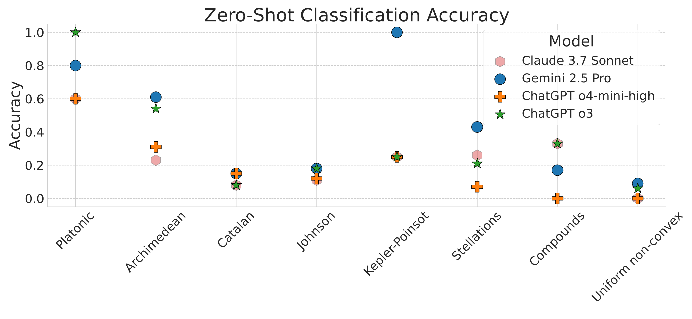
Figure 7: Zero-shot classification accuracy of various frontier models across polyhedron categories using wild images.
Reasoning Analysis:
To better understand the reasoning behind classification errors, we qualitatively analyzed representative model responses shown in
Table 4. These examples illustrate significant systematic gaps in geometric reasoning capabilities of current frontier vision-language models, underscoring the necessity of enhanced mechanisms for explicit geometric representation and reasoning to reliably differentiate complex geometric structures.
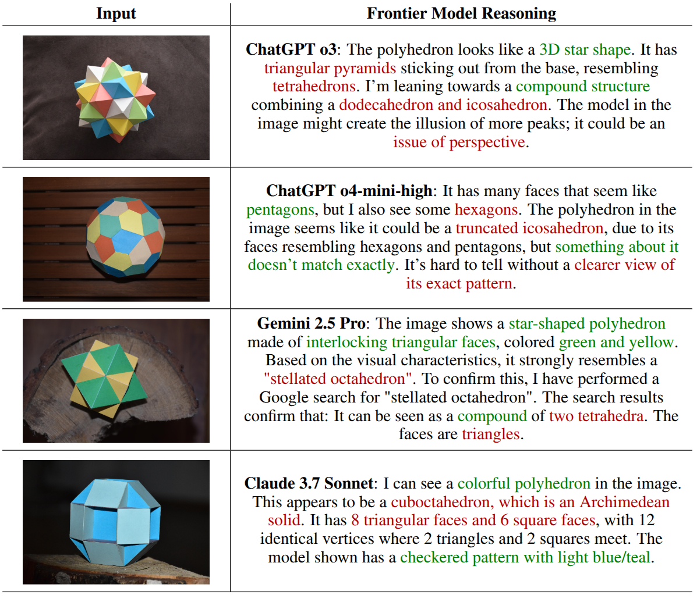
Table 4: Examples of failure cases illustrating errors in reasoning by frontier models that led to misclassification of
polyhedra. These cases highlight systematic mistakes in geometric recognition, such as misidentification of face
geometry, convexity, and compound structures. Text highlighted in green color indicates correct statements, while text in red color indicates incorrect reasoning.
Finding 4: Contemporary frontier models routinely misinterpret fundamental geometric properties such as convexity and face geometry.
Conclusion
We introduced GIQ, a novel benchmark designed to systematically assess the geometric reasoning capabilities of contemporary foundation vision and vision-language models using both synthetic and real-world polyhedral structures. Our extensive evaluations reveal notable discrepancies in current state-of-the-art models, highlighting a substantial disconnect between their impressive capabilities on standard benchmarks and their performance in tasks requiring explicit geometric reasoning. While certain models excel at implicitly recognizing specific 3D symmetry elements, they simultaneously exhibit significant shortcomings in differentiating geometrically similar shapes and accurately reconstructing even basic polyhedral forms from single images. Additionally, our zero-shot classification experiments revealed systematic errors in geometric reasoning, with frontier models frequently misidentifying fundamental properties such as face geometry, convexity, and compound structures, particularly in complex non-convex polyhedral classes.
Thus, GIQ serves as a critical diagnostic tool for future research, providing a targeted evaluation framework to drive the development of more robust, geometry-aware foundation models capable of human-level spatial reasoning.
BibTeX
@article{michalkiewicz2025giq,
title={GIQ: Benchmarking 3D Geometric Reasoning of Vision Foundation Models with Simulated and Real Polyhedra},
author={Michalkiewicz, Mateusz and Sokhal, Anekha and Michalkiewicz, Tadeusz and Pawlikowski, Piotr and Baktashmotlagh, Mahsa and Jampani, Varun and Balakrishnan, Guha},
journal={arXiv preprint arXiv:2506.08194},
year={2025}
}

 Click to jump to each section.
Click to jump to each section.